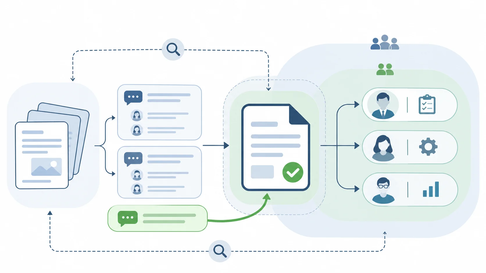

Article · 飞函
Article · 飞函
医药批次偏差讨论：记录怎么找、权限怎么控
某批次出现偏差后，生产、质量等人员可能需要迅速核对现场说明、检测材料和此前的处理意见。讨论一旦分散在多个群聊和文件副本里，后来加入的人就要反复询问“依据在哪一版”；为了赶进度而扩大文件共享范围，又可能让无关人员接触到敏感资料。
协同工具在这里要解决两个相连的问题：让有权限的人找得到讨论依据，也让每份材料只在需要的范围内流转。
先让讨论能回到具体记录
发起讨论时，团队可以约定使用统一的批次标识、偏差编号和材料名称，并在消息中说明当前要核对的事实、待确认的问题与负责人。需要回看过程时，成员才能沿着同一组线索查找消息和文件，而不是凭印象翻聊天记录。
飞函的即时通讯页面列有全局搜索和历史消息同步，网盘页面列有文件搜索能力。这些能力可为查找讨论和共享材料提供入口。实际使用时，还需要团队明确：哪份文件是当前讨论所依据的版本，结论应记录在哪里，以及聊天中的意见何时转入企业既有的正式流程。搜索到一条消息，并不等于完成了偏差记录的确认。
再把共享范围收在参与者身上
偏差讨论的参与者会变化：有人负责调查，有人只需了解进展，也有人在阶段任务结束后不再需要查看附件。因此，文件权限不宜仅凭“进了群”来决定。共享前应确认接收对象和所需材料；人员职责变化时，应复核并调整访问范围。
飞函网盘页面列有按成员或部门分配共享权限，安全页面列有按部门、角色或人员分配权限，以及通讯录可见范围等能力。企业可据此设计讨论群与文件共享空间的使用规则，例如把供跨部门核对的材料与仅限调查人员查看的材料分开管理。具体权限如何配置，仍需结合企业的组织职责和部署版本核实。

让查找与控制形成同一条工作线
一个可执行的做法是：发起人用统一标识提出问题，参与者在授权范围内查找消息和材料，负责人确认所依据的文件版本，再把处理意见带回正式记录；讨论结束后，复核临时共享对象和访问权限。这样，协同工具承接的是查找、沟通和受控共享，正式记录与审批仍由企业既定流程负责。
对医药企业而言，衡量这套协同方式是否有效，可以看三个具体结果：接手人员能否沿着批次和偏差线索找到讨论依据，参与者能否拿到完成任务所需的材料，以及任务结束后是否有人检查共享范围。记录查找和访问控制一起设计，讨论才既能推进，也能说清依据从哪里来、材料给了谁。